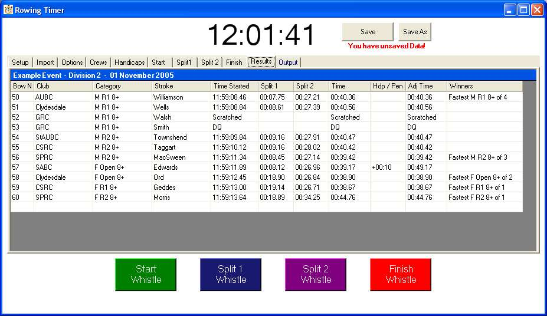

The Race is Over - RESULTS TIME!
Once you have your data in the crew tab, and watches, your results will be displayed when you select this tab.
(Hint - maximise the form).
Clicking on the column headers crudely sorts the table.
If you have selected "use autowinners" in options, then your winners will be displayed.
The program sorts by category, which is why it is so important to type in your categories carefully.
This is worth re-iterating.
"MOpen 4-" and "M Open 4-" are seen as very different when sorting.
If you are not using autowinner, or are a control freak... enter Your Winners here.... and save the file.
